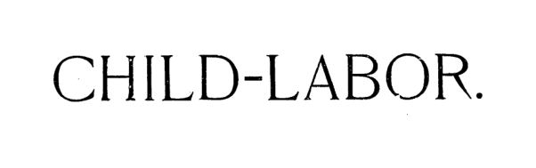

Crianças na linha de produção: dois diagnósticos de 1890
Leitura: 8 min
Em 1880, um em cada dezesseis trabalhadores dos EUA tinha de 10 a 15 anos. Dois ensaios de 1890 mediram o problema e chegaram à mesma conclusão: lei sem fiscalização não protege ninguém.


Uma menina de doze anos, maltrapilha, soluça na porta de uma loja. Na palma da mão, duas moedas de 25 centavos: o ganho da semana. “O pai vai me bater, com certeza, porque ganhei muito pouco esta semana” (“Pa'll lick me sure because I've made so little this week”). A cena é uma das dezenas que Clare de Graffenried anotou em visitas a lojas, oficinas e fiações. Ela e William F. Willoughby assinam os dois ensaios, ambos intitulados “Child Labor”, que ocupam a edição de março de 1890 das Publications of the American Economic Association.
O tamanho do problema vinha do censo. Em 1880, segundo a tabulação reproduzida por Willoughby, havia 1.118.356 crianças de 10 a 15 anos entre os trabalhadores dos Estados Unidos, uma em cada dezesseis pessoas ocupadas. Dez anos antes, a proporção era de uma em dezessete. O próprio autor admite que a conta subestima o fenômeno: deixa de fora as crianças que trabalhavam em casa, nos cortiços, sem salário, ajudando os pais a costurar botões ou destalar fumo.
Os dois textos se completam pelo método. Willoughby trabalha com estatísticas oficiais, a história das leis fabris inglesas e teoria econômica. Graffenried faz trabalho de campo: diz ter observado, em vinte estados, mais de 100 mil mulheres trabalhadoras e conversado individualmente com 12 mil. Ele escreve como economista; ela, como investigadora social que desconfia das próprias estatísticas que cita.
O diagnóstico é o mesmo. Havia leis em vários estados, mas pouca gente para aplicá-las, certificados de idade fáceis de fraudar e pais e patrões interessados em burlar a regra. Ambos tomam a Inglaterra, com quase um século de Factory Acts, como prova de que restringir o trabalho infantil não arruína a indústria. Diferem no tom: Graffenried recusa a tese de que o país estaria “indo para o buraco” e lembra que os abusos atingem um segmento da indústria, não o todo.
Por que o trabalho infantil sai caro, segundo Willoughby?
O centro do argumento é o “padrão de conforto”: o nível de vida que cada classe se habituou a exigir e abaixo do qual se recusa a trabalhar. Para Willoughby, é esse padrão, e não a mera subsistência da lei de ferro de Ricardo, que fixa os salários no longo prazo. A criança posta cedo na fábrica nunca conhece outra coisa; adulta, aceita salário de fome e puxa os demais para baixo.
Daí a tese mais contraintuitiva do ensaio: o salário dos filhos não aumenta a renda da família. Quando mulheres e crianças entram no mercado, a família inteira passa a ganhar, em média, o que o pai ganharia sozinho. Willoughby reproduz a parábola de Carroll D. Wright, do órgão de estatísticas do trabalho de Massachusetts: o industrial descobre que jovens de dezesseis anos fazem o serviço por um dólar, contra dois pagos aos homens; os concorrentes copiam; depois vêm crianças de dez e doze anos a cinquenta centavos, e o salário de todos desce junto.
A objeção dos industriais era a concorrência: proibir crianças num estado seria entregar o mercado ao vizinho. Willoughby responde com eficiência do trabalho, com o peso do consumo operário e com a mecanização que o trabalho caro induz. E lembra que os fabricantes de Massachusetts previram a ruína com a lei das dez horas; em vez disso, os estabelecimentos se multiplicaram.
O retrato legal é magro. Só onze estados proibiam o trabalho abaixo de certa idade em todas as atividades: três fixavam o limite em dez anos, três em doze e cinco em treze. Apenas oito tinham inspetores de fábrica. Muitas leis, diz ele, passaram já desenhadas pelos industriais para não funcionar. A proposta é prática: um inspetor-chefe com corpo de auxiliares e amplos poderes, as normas reunidas num código único, nos moldes da lei inglesa de 1878, e mais uniformidade entre os estados.
Só o Estado está em condições de remediar isso, por meio de legislação adequada. (The state alone is in a position to remedy this by suitable legislation)
O que Clare de Graffenried encontrou dentro das oficinas?
Graffenried percorre setor por setor. Nas lojas de tecidos, crianças carregavam dinheiro e troco entre balcões por US$ 1 a US$ 2,50 por semana, e eram multadas por atraso. A aritmética da multa expõe a injustiça: a menina que ganhava US$ 1,20 perdia um doze avos da semana por dez minutos de atraso; a vendedora de US$ 15 perdia um cento e cinquenta avos. Nas semanas anteriores ao Natal, ficavam até as 9, 10 ou 11 da noite.
Nos cortiços, a indústria do fumo vinha para dentro de casa: ela viu uma menina de cinco anos arrancando a nervura das folhas ao lado dos pais. Fora das lojas de tecidos e da indústria têxtil, escreve, nenhuma atividade empregava mais trabalhadores de sete a catorze anos que o fumo. No Ohio, o inspetor relatou cem meninos contratados num orfanato do Brooklyn por fábricas de vidro, em turnos que entravam pela noite.
O Sul era o caso extremo. Das 304 operárias e operários brancos entrevistados em fiações da Geórgia, 41 tinham doze anos ou menos, e mais de 56% haviam começado a trabalhar aos onze anos ou antes. Nas Carolinas, no Alabama e no Tennessee, nenhuma lei protegia as crianças das fábricas. O analfabetismo acompanhava: mais da metade dos operários nativos de quatro estados do Sul não sabia ler e escrever.
Onde a lei era aplicada, porém, funcionava, apesar das fraudes que ela documenta: certificados de idade vendidos, emprestados entre irmãos, datas alteradas na Bíblia da família. Daí suas propostas: regras fabris uniformes, inspeção mais rígida, inspetoras mulheres qualificadas, escola obrigatória dos sete aos catorze anos, o meio período inglês e idade mínima de dezesseis anos. E uma ideia ousada para 1890: o Estado pagaria às famílias pobres o equivalente ao salário da criança enquanto ela estudasse.
A necessidade do momento é menos de novas leis que de fazer cumprir as que existem. (less the need for new laws than for the enforcement of those which exist)
Na minha leitura
Na minha leitura, o argumento mais duradouro está em Willoughby, e é um problema de coordenação. Ele observa que, se uma família tira o filho da fábrica, o salário do pai não sobe; só sobe se a classe inteira fizer o mesmo. O mesmo vale para os industriais: enquanto um contratar crianças, os outros serão forçados a imitá-lo. Quando a decisão racional de cada um produz um resultado ruim para todos, a regra comum deixa de ser intromissão e passa a ser condição para que o mercado funcione num patamar melhor.
Graffenried acrescenta o que os economistas costumam subestimar: a regra vale o que vale a fiscalização. Seus números de Chicago e Massachusetts mostram que a lei aplicada muda comportamentos depressa; suas histórias de certificados falsos mostram como a lei sem fiscal vira papel. E a proposta de pagar às famílias para manter o filho na escola antecipa em um século a lógica das transferências condicionadas de renda: se o problema é a renda que a criança traz, compensá-la é mais eficaz do que apenas proibir.
Glossário
- Padrão de conforto (standard of comfort)
- Nível de vida que uma classe de trabalhadores se habituou a considerar mínimo; para Willoughby, é ele que fixa o salário no longo prazo.
- Lei de ferro dos salários
- Tese associada a Ricardo, assim batizada por Lassalle, de que os salários tendem ao mínimo necessário para a subsistência.
- Meio período inglês (half-time)
- Regime das leis fabris inglesas em que a criança trabalha metade do dia e frequenta a escola na outra metade.
- Certificado de idade
- Documento exigido pelas leis estaduais para admitir menores; segundo os ensaios, era com frequência falsificado, emprestado ou vendido.
- Cash girl / cash boy
- Criança empregada nas lojas para levar dinheiro e troco entre os balcões e o caixa.
Artigos desta edição
- Child Labor — William F. Willoughby, A.B. (pp. 5–70). Willoughby percorre a história das leis fabris inglesas, de 1802 à lei consolidada de 1878, e usa os censos de 1870 e 1880 para mostrar o avanço do trabalho infantil nos Estados Unidos, que chegou a uma criança de 10 a 15 anos para cada dezesseis trabalhadores. Com base na teoria do padrão de conforto, sustenta que o trabalho infantil rebaixa salários e não aumenta a renda familiar, rebate a objeção da concorrência entre estados e defende proibição por idade, inspetores com poderes reais e códigos fabris unificados. JSTOR
- Child Labor — Miss Clare de Graffenried (pp. 71–149). Com base em observação direta em vinte estados, Graffenried descreve o trabalho infantil em lojas de tecidos, confecções, fábricas de fumo, caixas, vidro, conservas e fiações do Sul, com atenção a jornadas, salários, multas, acidentes, analfabetismo e fraude nos certificados de idade. Mostra que a fiscalização reduziu o problema em Chicago e Massachusetts e propõe aplicar as leis existentes, uniformizar regras, contratar inspetoras, tornar a escola obrigatória dos sete aos catorze anos, elevar a idade mínima a dezesseis e compensar financeiramente as famílias pobres. JSTOR
Fontes
- Child Labor (William F. Willoughby) (pp. 5–70). JSTOR · Internet Archive (PDF)
- Child Labor (Clare de Graffenried) (pp. 71–149). JSTOR · Internet Archive (PDF)
- Sumário da edição no JSTOR: Publications of the American Economic Association, vol. 5, nº 2.
Documento em domínio público (EUA, publicado antes de 1931), via JSTOR Early Journal Content e Internet Archive. Resumo e comentário do autor deste site, sem afiliação com a American Economic Association. Encontrou um erro? Escreva: a correção é publicada no próprio texto, com data.
← Nº 23 · Japão, 1890: instituições modernas sobre uma economia feudal Nº 25 · O canal que segurava o preço do trem →